レンズ鏡筒メカ設計 × シミュレーション（Sony向け）
交換レンズ／組込レンズの鏡筒メカ設計を、C++17でゼロから実装した8つの物理シミュレーションで検証するツール群です。
公差スタックアップ（光学感度）・オートフォーカス機構＋VCM制御・鏡筒の構造FEA（熱・落下衝撃・モード）・
手ブレ補正（OIS）制御・公差配分の最適化・アクティブアライメント・筐体の材料選定/軽量化・athermalization＋ランダム振動。以下はすべてツール（optm_demo）自身が出力した実測値です。
各レンズの偏心・傾き・間隔の製造公差を、モンテカルロ＋RSSで像面のボアサイト誤差へ伝搬。支配的な「クリティカル公差」を特定。
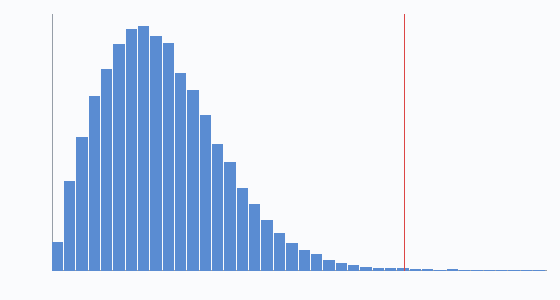
サイクロイド・カム曲線でフォーカス群を滑らかに駆動し、ボイスコイルモータ（VCM）をPID＋フィードフォワードで整定。
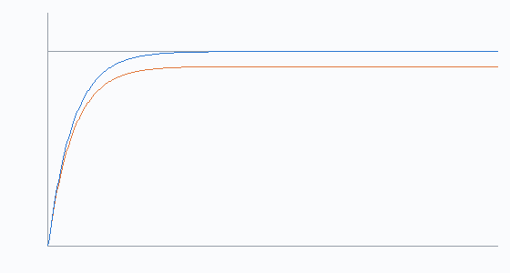
| 制御 | 整定時間 | 定常誤差 |
|---|---|---|
| フィードフォワード有 | ||
| フィードフォワード無 | — |
モデルベースFFがバネ負荷を打ち消し、のフォーカス誤差を解消。
アルミ鏡筒（片持ち円筒＋先端レンズ質量）の熱膨張ピント移動、1次曲げモード、落下衝撃の応答スペクトル（DAF）と安全率。
| 項目 | 値 | 意味 |
|---|---|---|
| 熱ピントドリフト | 温度1℃あたりの像面移動 | |
| 1次曲げ共振 | 外乱帯域より十分高い | |
| 落下衝撃（1m） | 半正弦パルス＋SRS（DAF ） | |
| 曲げ応力 / 安全率 |
多周波の手ブレ角をジャイロで検出し、2次アクチュエータで像を安定化。残留像ブレを写真の「段（stops）」で評価。
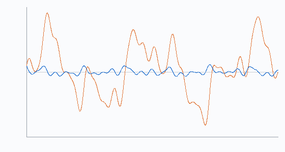
| OIS | 像面RMS |
|---|---|
| オフ | |
| オン |
安定化 （RMS比 倍）。
目標の像面予算を必ず満たしつつ、製造コスト（きつい公差ほど高い）を最小化するよう各素子へ公差を最適配分。感度ベースのラグランジュ閉形式解。
1素子を動かしながらスポットを最小化する現代のレンズ組立。ここでは偏心x/y＋フォーカスの3自由度をNelder-Mead（滑降シンプレックス）で探索。
| 状態 | スポット指標 |
|---|---|
| 組立直後 | |
| AA後 |
回の反復で補正量 を印加。残差はこの3自由度では消せない傾き成分（＝AAの原理限界）。
軽く硬い構造の指標 Ashby E1/2/ρ で材料を順位付け。薄肉＋軸リブで「スリムでも高比剛性」を狙う。
高CTEスペーサで熱ピントドリフトを相殺（受動補償）。ランダム振動はMiles式で1次モード応答を求め、3σ応力を疲労限度と比較。
| 項目 | 値 | 意味 |
|---|---|---|
| 熱ドリフト（補償前→後） | スペーサ長 で相殺 | |
| ランダム振動 応答 | Miles式・3σ | |
| 3σ応力 / 疲労余裕 |
閉形式ではなく、オイラー・ベルヌーイ梁要素を組み立てた実FEM。一般化固有値問題で固有振動・モード形状、熱-構造連成、Newmark-β法で落下衝撃の過渡応答を解き、閉形式解と照合検証。研究で培ったFEA（Abaqus/Ansys/自作FEM）の実力を実装で提示。
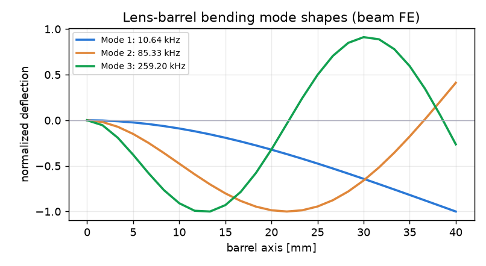
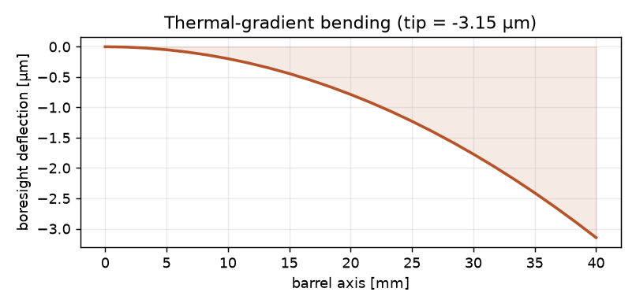
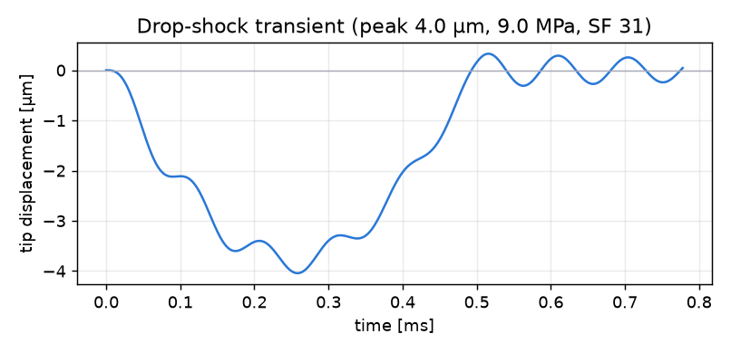
検証：1次モード 10,639 Hz（閉形式 10,624 Hz と 0.14% 一致）／熱勾配たわみ FE=解析解 一致（3.15 µm/5℃勾配）／落下衝撃 安全率30.6（Newmark-β過渡）。24要素・梁FE。
研究の PyTorch×GNN×ベイズ を設計に直結（求人票「生成AIを活用した設計改革」）。①梁FEでCAE正解を生成 → ②PyTorch GCN が「設計→性能」を瞬時予測（R²=0.99/1.00/1.00）→ ③ベイズ最適化(GP+EI) が制約（1次モード≥9kHz・安全率≥6）を満たす最軽量設計を生成し、実FEで検証。
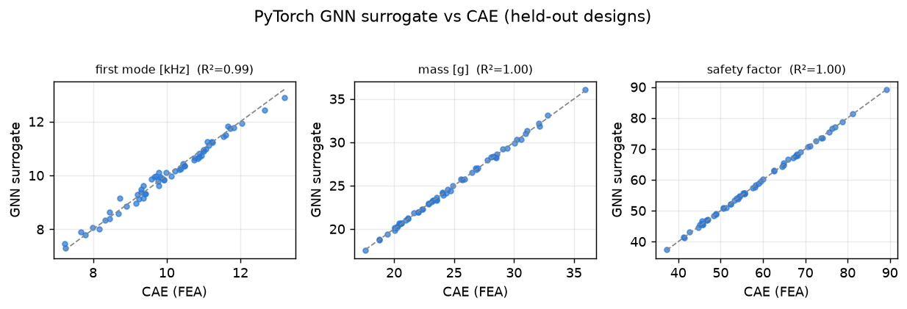
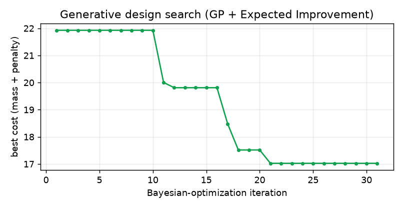
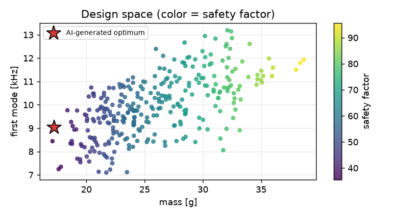
生成された最適設計：Mg合金＋薄肉＋7リブ → 1次モード 9.1kHz・質量 17.2g・安全率 36（代理予測が実FEと一致）。CAEと生成AIを結ぶ"設計改革"を実装（PyTorch）。
梁要素では捉えられない断面内の応力分布を解くため、鏡筒壁の (r,z) 断面を 4節点 軸対称ソリッド(Q4)要素でメッシュ化し、真の2次元弾性場を有限要素で解く。均一昇温での熱膨張場を求め、軸方向の伸び（＝バックフォーカス・ドリフト）を αLΔT と照合。マウント面拘束による熱応力の集中も可視化——CAEエンジニアが実際に回す解析と可視化そのもの。
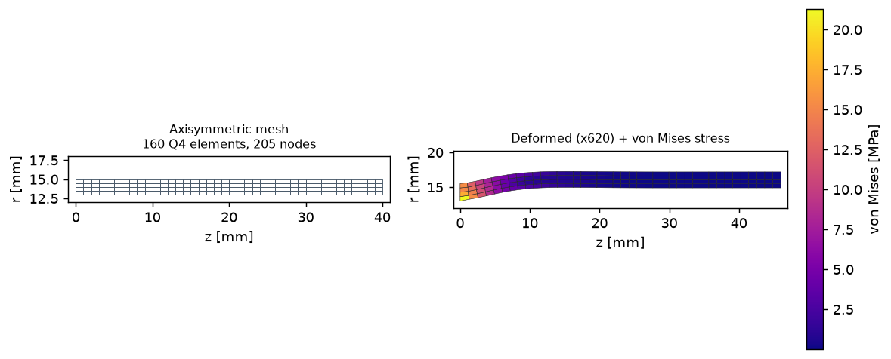
検証：160要素・205節点のQ4メッシュ。ΔT=10℃で軸方向伸び 9.68 µm（解析解 αLΔT=9.44µm と 2.5% 一致、0.97µm/℃）／半径膨張 3.65µm。マウント面（z=0）の径方向拘束が最大 21 MPa の熱応力を生む様子をメッシュ変形＋von Mises等値図で可視化。
レンズの合否は幾何スポットではなく MTF（コントラスト）で決まる。メカ設計者が担う「機械誤差 → 波面誤差 → MTF劣化」の写像を波動光学で実装：瞳にゼルニケ波面を載せ、PSF=|FFT(瞳)|²・MTF=瞳の自己相関で計算。偏心/傾き→コマ・非点、熱ドリフト（鏡筒CTE＋dn/dT）→デフォーカスとして重畳し、モンテカルロで「MTF規格を確実に満たす公差」を逆算。公差モジュール④のKPIを"スポット"から"MTF"へ格上げ。
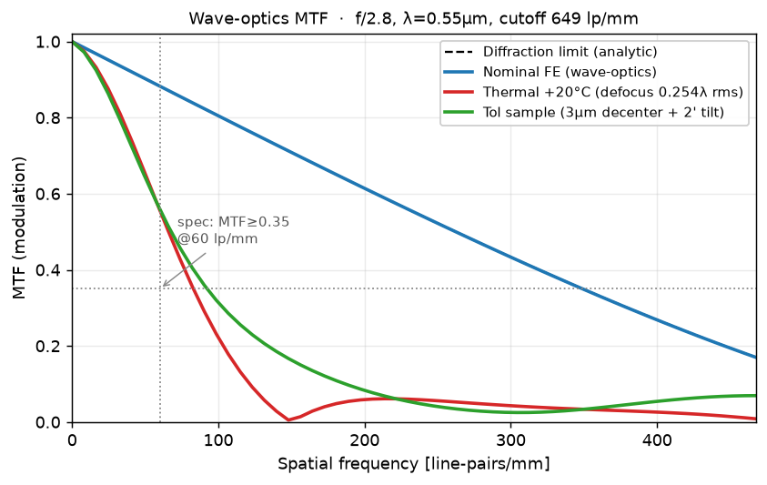
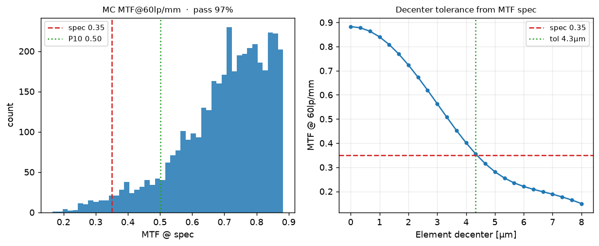
検証：無収差FE-MTFが閉形式の回折MTFと 最大誤差 0.0003 で一致（f/2.8・λ=0.55µm・遮断649 lp/mm）。規格 MTF≥0.35 @60 lp/mm に対し、公称 0.88／熱+20℃で 0.56（デフォーカス0.25λ、150 lp/mm付近のコントラスト反転も再現）。モンテカルロ合格率 97%（P10=0.50）、規格から導く偏心公差 4.3 µm。
アクチュエータを時間領域で回すC++ ois/cam に対し、周波数領域で閉ループを設計・証明する（メカトロ評価者の言語）。2次アクチュエータにPI＋位相進み補償を巻き、ループ整形でボード線図・位相/ゲイン余裕を確定。感度関数 S=1/(1+L) を手ブレPSDに適用して残留像振れ（stops）と外乱抑圧を評価し、閉ループ・ステップ応答で整定・オーバーシュートを提示。さらに軽減衰の機構共振がゲイン余裕を食う→ノッチフィルタで回復という定番の課題まで実装。
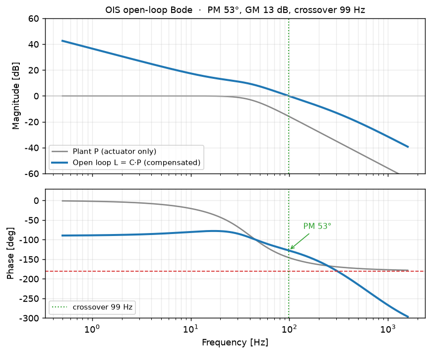
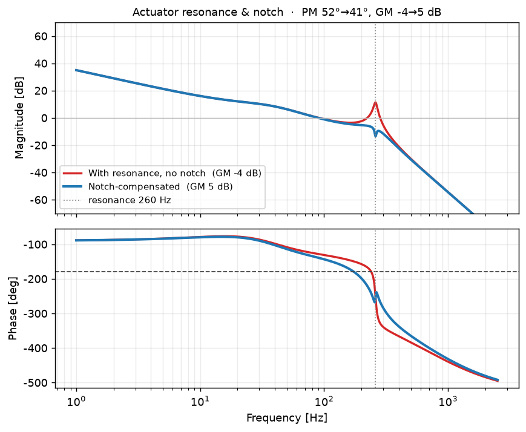
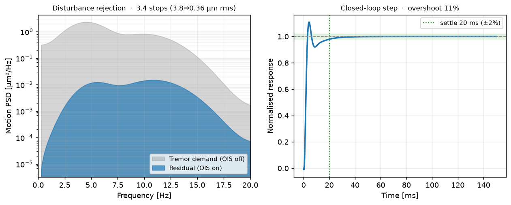
設計結果：位相余裕 53°・ゲイン余裕 13 dB・交差 99 Hz、閉ループ整定 20 ms・オーバーシュート 11%。手ブレ抑圧 3.4 stops（RMS 3.8→0.36 µm）。共振補償：軽減衰260 Hz共振でゲイン余裕 −4 dB（不安定）→ ノッチで +5 dB（安定）にサンプル遅延（0.4 ms）込みで回復。
解析だけでなく設計成果物そのもの——メカ設計者が引く2D/3D CAD。名前付き寸法（外径・壁厚・全長・フランジ・4つのレンズ座）から断面をパラメトリックに定義→回転ソリッドを生成し STL 出力（任意のCAD/CAMへ取り込み可）。さらにGD&T 断面図（データムA/B・幾何公差・H7はめあい・表題欄）を PNG と実 DXF で作図。各幾何公差は「同軸度→偏心→ボアサイト」「座の振れ→傾き→コマ」のように光学・熱の予算から逆算して決めており、図面は"飾り"ではなく導出されている。
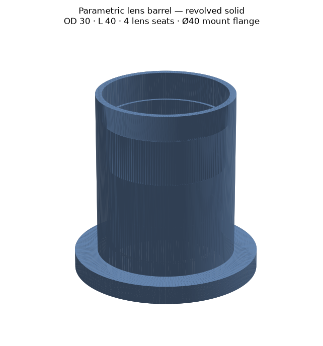
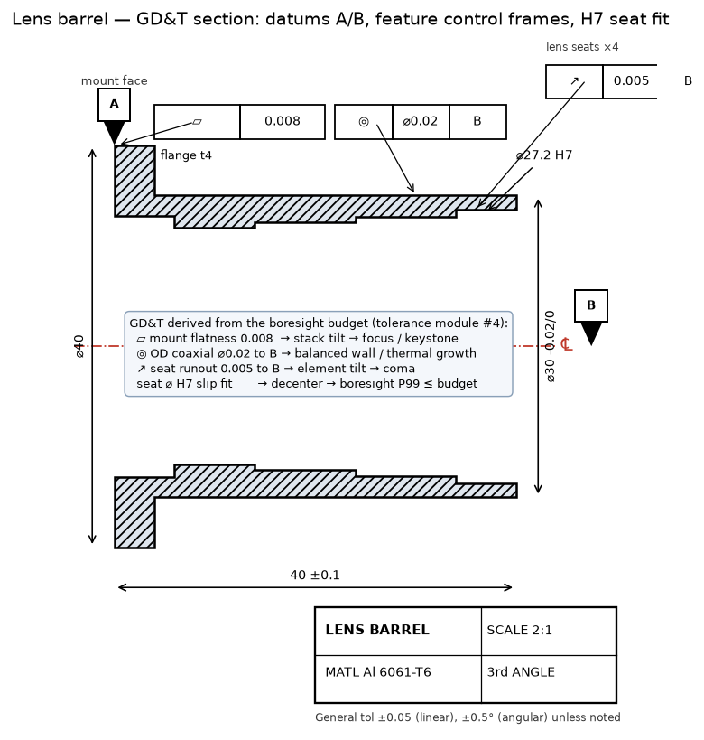
成果物：ウォータータイトな回転ソリッド（体積 10.3 cm³・Al6061で質量 27.9 g）→ lens_barrel.stl、GD&T図面 → lens_barrel_drawing.dxf。幾何公差：マウント面 平面度 0.008（データムA）／外径 同軸度 ⌀0.02（B）／レンズ座 円周振れ 0.005（B）／座 ⌀ H7 すべりばめ——公差スタック④の像面予算から導出。